Intro Matplotlib¶
%matplotlib inline
import matplotlib.pyplot as plt
import numpy as np
from numpy.random import rand
x = rand(100)
y = rand(100)
plt.scatter(x,y);
#plt.show()
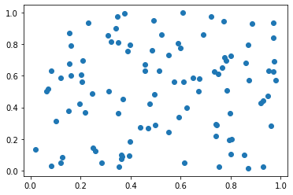
x = rand(1000)
y = rand(1000)
plt.scatter(x,y);
#plt.show()
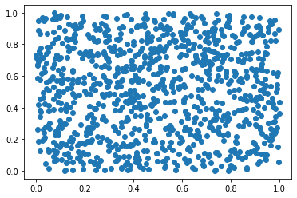
plt.scatter(x,y,color='green');
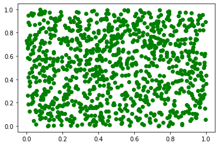
plt.scatter(x,y,color='purple');

plt.plot([1, 2, 3, 4],'-r')
plt.ylabel('label y');
#plt.show()
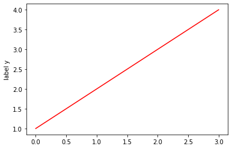
plt.plot([0,1, 2, 3, 4], [0,1, 2, 3, 4]);

#ERROR
plt.plot([0,1, 2, 3, 4], [0,1, 2, 3]);
---------------------------------------------------------------------------
ValueError Traceback (most recent call last)
<ipython-input-50-94b01a0606ce> in <module>()
1 #ERROR
----> 2 plt.plot([0,1, 2, 3, 4], [0,1, 2, 3]);
/usr/local/lib/python3.6/dist-packages/matplotlib/pyplot.py in plot(scalex, scaley, data, *args, **kwargs)
2761 return gca().plot(
2762 *args, scalex=scalex, scaley=scaley, **({"data": data} if data
-> 2763 is not None else {}), **kwargs)
2764
2765
/usr/local/lib/python3.6/dist-packages/matplotlib/axes/_axes.py in plot(self, scalex, scaley, data, *args, **kwargs)
1644 """
1645 kwargs = cbook.normalize_kwargs(kwargs, mlines.Line2D)
-> 1646 lines = [*self._get_lines(*args, data=data, **kwargs)]
1647 for line in lines:
1648 self.add_line(line)
/usr/local/lib/python3.6/dist-packages/matplotlib/axes/_base.py in __call__(self, *args, **kwargs)
214 this += args[0],
215 args = args[1:]
--> 216 yield from self._plot_args(this, kwargs)
217
218 def get_next_color(self):
/usr/local/lib/python3.6/dist-packages/matplotlib/axes/_base.py in _plot_args(self, tup, kwargs)
340
341 if x.shape[0] != y.shape[0]:
--> 342 raise ValueError(f"x and y must have same first dimension, but "
343 f"have shapes {x.shape} and {y.shape}")
344 if x.ndim > 2 or y.ndim > 2:
ValueError: x and y must have same first dimension, but have shapes (5,) and (4,)

plt.plot([5, 2, 9, 4], marker='o', linewidth=3,color='green') #
plt.xlabel('label x');
#plt.show()
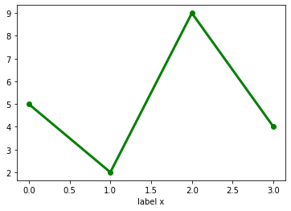
plt.plot([1, 2, 3, 4], [1, 4, 9, 16],);
plt.plot([1,3,5,8], [4, 3, 10, 12],'--');
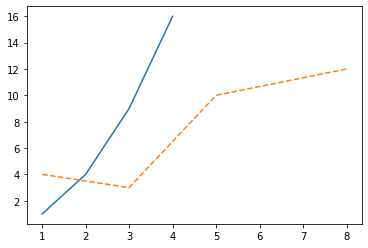
plt.plot([1, 2, 3, 4], [1, 4, 9, 16],'ob')
plt.axis([0, 6, 0, 20]);
#plt.show()

plt.scatter([1, 2, 3, 4], [1, 4, 9, 16],c="g", alpha=0.9, marker=r'$\clubsuit$',label="Luck");
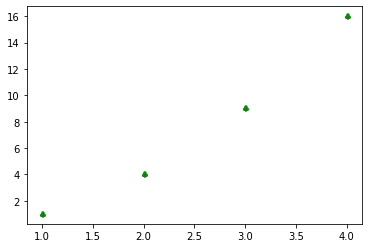
x = np.linspace(0,10,100)
y = np.exp(-x)
plt.plot(x,y);
#plt.show()

x = [i for i in range (101)]
print(x)
[0, 1, 2, 3, 4, 5, 6, 7, 8, 9, 10, 11, 12, 13, 14, 15, 16, 17, 18, 19, 20, 21, 22, 23, 24, 25, 26, 27, 28, 29, 30, 31, 32, 33, 34, 35, 36, 37, 38, 39, 40, 41, 42, 43, 44, 45, 46, 47, 48, 49, 50, 51, 52, 53, 54, 55, 56, 57, 58, 59, 60, 61, 62, 63, 64, 65, 66, 67, 68, 69, 70, 71, 72, 73, 74, 75, 76, 77, 78, 79, 80, 81, 82, 83, 84, 85, 86, 87, 88, 89, 90, 91, 92, 93, 94, 95, 96, 97, 98, 99, 100]
type(x)
list
y = [i**2 for i in x]
print(y)
[0, 1, 4, 9, 16, 25, 36, 49, 64, 81, 100, 121, 144, 169, 196, 225, 256, 289, 324, 361, 400, 441, 484, 529, 576, 625, 676, 729, 784, 841, 900, 961, 1024, 1089, 1156, 1225, 1296, 1369, 1444, 1521, 1600, 1681, 1764, 1849, 1936, 2025, 2116, 2209, 2304, 2401, 2500, 2601, 2704, 2809, 2916, 3025, 3136, 3249, 3364, 3481, 3600, 3721, 3844, 3969, 4096, 4225, 4356, 4489, 4624, 4761, 4900, 5041, 5184, 5329, 5476, 5625, 5776, 5929, 6084, 6241, 6400, 6561, 6724, 6889, 7056, 7225, 7396, 7569, 7744, 7921, 8100, 8281, 8464, 8649, 8836, 9025, 9216, 9409, 9604, 9801, 10000]
type(y)
list
plt.figure(figsize=(10,7)) ## play to change the dimension
plt.plot(x,y);
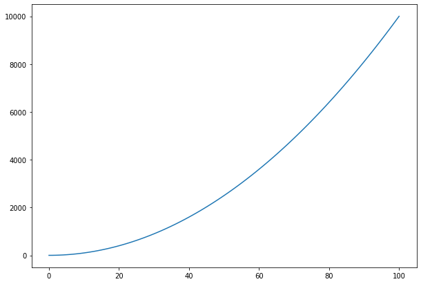
plt.figure(figsize=(10,7)) ## play to change the dimension
plt.plot(y,x);
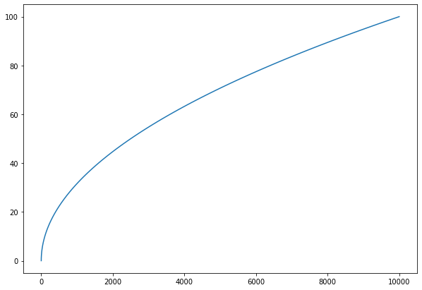
x = np.linspace(0, 10, 100)
plt.figure()
plt.plot(x, np.sin(x), '-')
plt.plot(x, np.cos(x), '--');

import matplotlib.pyplot as plt
import numpy as np
# Fixing random state for reproducibility
np.random.seed(667)
x = np.arange(0.0, 50.0, 2.0)
y = x ** 1.3 + np.random.rand(*x.shape) * 30.0
s = np.random.rand(*x.shape) * 800 +2000
plt.figure(figsize=(10,7)) ## play to change the dimension
plt.scatter(x, y, s, c="g", alpha=0.5, marker=r'$\clubsuit$',
label="Luck")
plt.xlabel("Age")
plt.ylabel("Lucky")
plt.legend(loc='upper left');
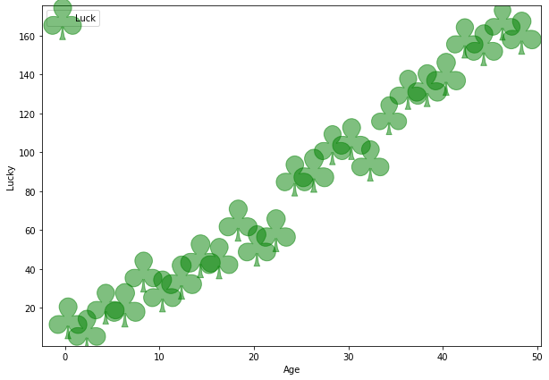
%matplotlib inline
import matplotlib.pyplot as plt
from matplotlib import pyplot as plt
import numpy as np
ages_x = [18, 19, 20, 21, 22, 23, 24, 25, 26, 27, 28, 29, 30, 31, 32, 33, 34, 35,
36, 37, 38, 39, 40, 41, 42, 43, 44, 45, 46, 47, 48, 49, 50, 51, 52, 53, 54, 55]
len(ages_x)
38
fav_stud_y = [20046, 17100, 20000, 24744, 30500, 37732, 41247, 45372, 48876, 53850, 57287, 63016, 65998, 70003, 70000, 71496, 75370, 83640, 84666,
84392, 78254, 85000, 87038, 91991, 100000, 94796, 97962, 93302, 99240, 102736, 112285, 100771, 104708, 108423, 101407, 112542, 122870, 120000]
plt.plot(ages_x, fav_stud_y, label="FAV's student");
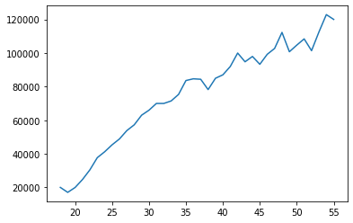
nofav_stu_y = [16446, 16791, 18942, 21780, 25704, 29000, 34372, 37810, 43515, 46823, 49293, 53437, 56373, 62375, 66674, 68745, 68746, 74583, 79000,
78508, 79996, 80403, 83820, 88833, 91660, 87892, 96243, 90000, 99313, 91660, 102264, 100000, 100000, 91660, 99240, 108000, 105000, 104000]
plt.plot(ages_x, nofav_stu_y, label='No FAV Student');
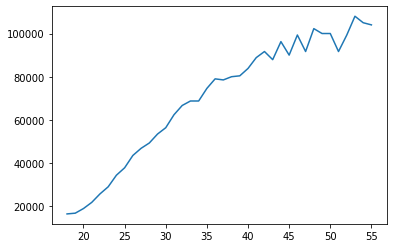
others_y = [17784, 16500, 18012, 20628, 25206, 30252, 34368, 38496, 42000, 46752, 49320, 53200, 56000, 62316, 64928, 67317, 68748, 73752, 77232,
78000, 78508, 79536, 82488, 88935, 90000, 90056, 95000, 90000, 91633, 91660, 98150, 98964, 100000, 98988, 100000, 108923, 105000, 103117]
plt.plot(ages_x, others_y, color='#444444', linestyle='--', label='Others')
[<matplotlib.lines.Line2D at 0x7f0c9babf2b0>]

plt.figure(figsize=(15,12))
plt.plot(ages_x, fav_stud_y, label="FAV's student"); # primo grafico
plt.plot(ages_x, nofav_stu_y, label='No FAV Student') # secondo grafico
plt.plot(ages_x, others_y, color='#444444', linestyle='--', label='Others') # terzo grafico
plt.title('Median Salary in a dreamworld', fontsize=18)
plt.xlabel('Ages', fontsize=18)
plt.ylabel('Median Salary by age', fontsize=18)
plt.legend(fontsize=18)
plt.axis()
#plt.savefig('the_salary_I_wonder.png')
#plt.show()
(16.15, 56.85, 11124.8, 128191.2)

plt.savefig('the_salary_I_wonder1.png')
<Figure size 432x288 with 0 Axes>
from google.colab import files
files.download("the_salary_I_wonder1.png")
x = [i for i in range (101)]
y1 = [i**3 for i in x]
y2 = [i**2 for i in x]
plt.figure(figsize=(15,5))
plt.plot(x,y1,y2);
plt.xlabel('x axis')
plt.ylabel('y axis')
plt.legend(['quadratic','cubic'], loc=0); #loc = position
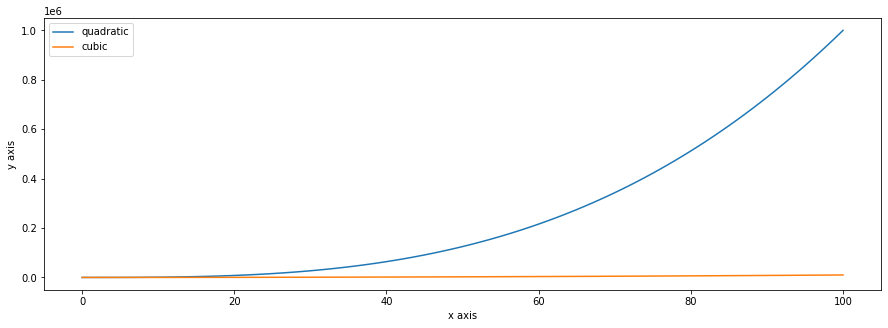
print(y2)
[0, 1, 4, 9, 16, 25, 36, 49, 64, 81, 100, 121, 144, 169, 196, 225, 256, 289, 324, 361, 400, 441, 484, 529, 576, 625, 676, 729, 784, 841, 900, 961, 1024, 1089, 1156, 1225, 1296, 1369, 1444, 1521, 1600, 1681, 1764, 1849, 1936, 2025, 2116, 2209, 2304, 2401, 2500, 2601, 2704, 2809, 2916, 3025, 3136, 3249, 3364, 3481, 3600, 3721, 3844, 3969, 4096, 4225, 4356, 4489, 4624, 4761, 4900, 5041, 5184, 5329, 5476, 5625, 5776, 5929, 6084, 6241, 6400, 6561, 6724, 6889, 7056, 7225, 7396, 7569, 7744, 7921, 8100, 8281, 8464, 8649, 8836, 9025, 9216, 9409, 9604, 9801, 10000]
plt.figure(figsize=(15,5))
# evenly sampled time at 200ms intervals
t = np.arange(0., 5., 0.2)
# red dashes, blue squares and green triangles
plt.plot(t, t, 'r--', t, t**2, 'bs', t, t**3, 'g^')
#plt.show()
[<matplotlib.lines.Line2D at 0x7f0c9669c390>,
<matplotlib.lines.Line2D at 0x7f0c9669c550>,
<matplotlib.lines.Line2D at 0x7f0c9669c668>]

from random import sample
import random
#random.seed(667)
data = sample(range(1,1000), 100)
plt.hist(data);

import matplotlib.pyplot as plt
import numpy as np
x = np.linspace(-5,5,100)
y = 2*x+1
plt.plot(x, y,color='red',label='y=2x+1')
plt.title('Graph of y=2x+1')
plt.xlabel('label x')
plt.ylabel('label y')
plt.legend(loc='upper left');
#plt.grid()
#plt.show()
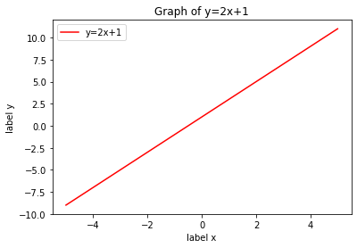